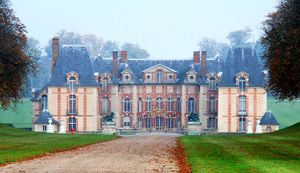
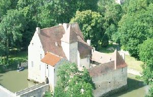
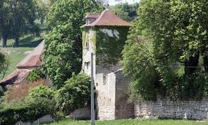

Recensement Jean-Claude Truffet
| Département | 03 — Allier |
| Canton | Ebreuil |
| Commune | Vicq |
| Type d'édifice | Château |
| Période d'origine | XV-XVII |



Six châteaux à Vicq, la Mothe (voir article), Arçon( voir article), Dacq du XIXe siècle dans un grand parc, de Luth du XV-XIXe siècle, la Ruas du XVIII-XIXe siècle et de Vodot du XVIIe siècle. DACQ, après avoir longtemps appartenu aux Rothschild, le château est la propriété de la famille Carly, hôtel restaurant. LUTH,les premiers seigneurs sont cité au début du XVIe siècle mais il est probable que très tôt, cette maison forte importante dépendait des seigneurs de Veauce ou des abbés d'Ebreuil, voire des seigneurs du Châtelard ou des seigneurs de Monclar encore plus proche. En 1503 Anthoine Breschart, écuyer, reconnait tenir de la duchesse de Bourbon sa maison de luxe, avec le domaine, en toute seigneurie. Hôtel restaurant. RUES, est longtemps resté la propriété des Boirot de Laruat, famille aux armoiries d'azur au chevron d'or, accompagné de trois étoiles de même, les deux en chef, semées de deux oiseaux affrontés d'argent. Au XIXe siècle, la seignerie de Laruas vint par alliance dans la famille de Sereys qui fit construire le logis actuel, et dont les descendants en étaient encore propriétaires. VODOT, la terre de Vodot était un fief noble qui, en 1311, appartenait à Bonnet de Hulme qui fit aveu de son fief de Vodot à Perrin, seigneur de Veauce. Vers 1460, la seigneurie appartenait à Louis Soulas, écuyer. Après la mort de ce dernier, Vodot passa à son neveu Henry Soulas, écuyer lui aussi, et qui porta le titre de seigneur de Vodot. En 1503, la famille Soulas a cédé son fief à Gabriel et Magdeleine de Paray qui sont seigneurs de Vauldot les Ebreille et qui reconnaissent tenir en fief de la duchesse de Bourbon leur terre de Vaudot composée d'une maison, garenne, moulin et colombier.
Dacq, très agréablement installé à l'intérieur d'un grand parc arboré, ce château est une construction du XIXe siècle. C'est un corps de logis de plan rectangulaire à deux niveaux et cinq travées de fenêtres, ce qui en fait une résidence spacieuse. Un toit à croupes couvert d'ardoises est ouvert de rares lucarnes. Luth, au début du XVIIe siècle, au Lucq, il y a une belle tour carrée fort élevée, ou il y a une plate forme au dessus, dans laquelle la tour servit de prisons pour ladite justice, avec une petite maison tout à côté et un beau colombier aussi dans le même lieu des vergers y joignant vignes et terres. Aujourd'hui la tour a été démolie, mais le colombier subsiste, ainsi que le corps de logis qui a reçu d'importantes transformations au XVe siècle, par des ouvertures à angles moulurés et par une belle cheminée monumentale. Rues, il ne reste plus grand chose de la construction initiale, si ce n'est un pigeonnier carré à lanterneau, inséré dans de vastes communs du XVe siècle. Le corps de logis actuel est une construction du XIXe siècle à deux niveaux, recouverte en ardoises, ou les encadrements des ouvertures et les angles sont en pierre de taille blanche. L'accès de la demeure est conduit par une allée seigneuriale bordée de beaux arbres. Vodot, au début du XVIIe siècle, la maison et un lieu noble de Veaudot consistait en maison avec deux chambres basses, deux chambres hautes, le tout joignant et tenant avec une pièce de terre appelée le mas de Veaudot, la maison de Vodot est installée sur un terre plein dont le talus forme une déclivité de plusieurs mètres et dont l'accès est défendu par le mur d'enceinte ou le mur aveugle des constructions qui couronnent le talus.
Famille Carly Famille d'Anthoine Breschart Famille de Bonnet de Hulme"
Château de Dacq, de Luth, de Rues et de vodot à Vicq